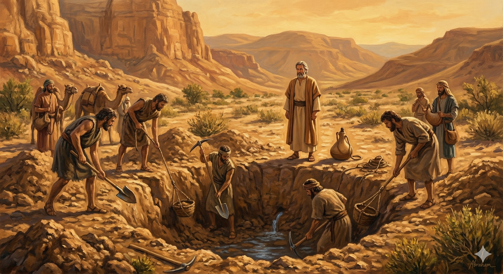

최신 묵상
아브라함 · Day 2
제단을 쌓다 — 새 땅에서의 첫 예배
창세기 12:6-8
가나안 땅에 도착한 아브람의 첫 번째 반응은 제단을 쌓는 것이었습니다. 아직 아무것도 이루어지지 않은 상태에서 — 그는 약속만 붙잡고 예배했습니다.

이삭 · Day 1
다시 판 우물 — 르호봇
창세기 26:17-22
이삭은 맞서 싸우지 않았습니다. 조용히 자리를 옮겨 다시 팠습니다. 르호봇은 포기하지 않는 자에게 열립니다.

야곱 · Day 1
벧엘의 사닥다리
창세기 28:10-17
도망자 야곱의 가장 낮은 자리에서 하나님은 먼저 기다리고 계셨습니다. 그 돌베개 자리가 벧엘이 됩니다.